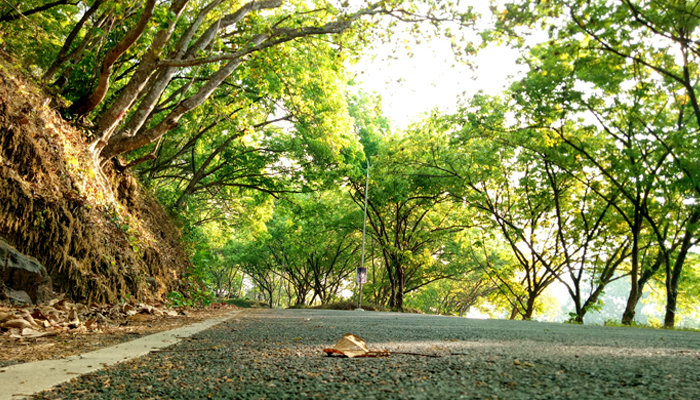

Rajiv Gandhi Institute of Technology, named after the late Prime Minister Sri Rajiv Gandhi, run by the Government of Kerala, started functioning in 1991. It hasestablished a vast infrastructure and put together a team of dedicated teachers. The institution has become one of the leading technical Institutes in Kerala. The government has started this institution in the view of making it a center for post graduation and research studies. The college is affiliated to the APJ ABDUL KALAM TECHNOLOGICAL UNIVERSITY. RIT, the sanctum of technology aims at providing high quality education for talented students from all sections of the society. Owned and managed by the Government of Kerala, it has a highly qualified and dedicated faculty. More than providing technical education RIT aims at the overall development of each and every RITian. The college provides a positive environment for the students to develop their potentials and to excel in all walks of life.
All courses offered by RIT are affiliated to KERALA TECHNICAL UNIVERSITY and approved by the All India Council for Technical Education (AICTE).The B. Tech programmes are of 8 semester (4 year) duration. The combined first and second semester courses are common for all branches.The B. Arch programme is of 10 semester (5 year) duration. The M. Tech programmes are of 4 semester (2 year) duration, and the MCA programme is of 6 semester (3 year) duration.
| UG | ||
|---|---|---|
| COURSE | DEPARTMENT | INTAKE |
| B.Tech | Civil Engineering | 66 |
| Mechanical Engineering | 66 | |
| Electrical and Electronics Engineering | 66 | |
| Electronics and Communication Engineering | 66 | |
| Computer Science and Engineering | 66 | |
| B.Arch | Architechture | 40 |
| P G | |||
|---|---|---|---|
| COURSE | DEPARTMENT | SPECIALIZATION | INTAKE |
| M.Tech | Civil Engineering | Transportation Engineering | 18 |
| Mechanical Engineering | Industrial Engineering & Management | 18 | |
| Electrical and Electronics Engineering | Industrial Drives and Control | 18 | |
| Electronics and Communication Engineering | Advanced Communicationnand Information System | 18 | |
| Electronics and Communication Engineering | Advanced Communicationnand Information System | 18 | |
| Computer Science and Engineering | Computer Science and Engineering | 18 | |
| MCA | MCA | Computer Applications | 40 |